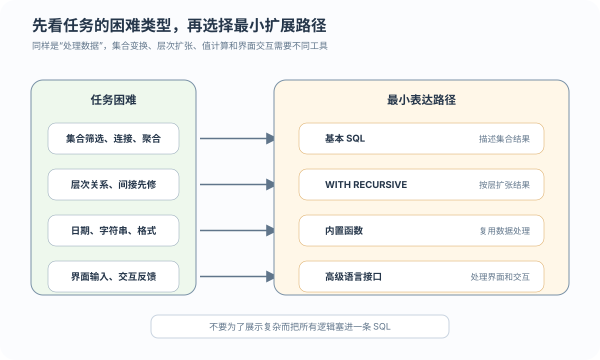
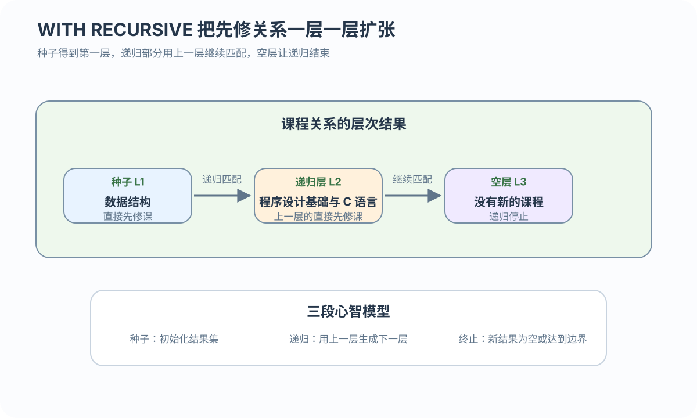

子句
WITH 和 WITH RECURSIVE 组织中间结果和递归层次
从集合查询扩展到递归和过程控制
 VER. 2608.2
Built with impress.js
VER. 2608.2
Built with impress.js
任务类型决定递归、函数或过程控制等最小表达路径
先按任务的困难类型选择扩展路径

| 任务 | 输入 → 输出 | 主要困难 | 最小路径 |
|---|---|---|---|
| 全部先修课 | Course → 多层课程 | 层次递归 | WITH RECURSIVE |
| 一周生日提醒 | 出生日期 → 日期窗口 | 日期、字符串和边界 | 内置函数 |
| GPA 计算 | 成绩与学分 → GPA | 分支、循环和状态 | 过程化 SQL 基础；持久化封装需要存储程序 |
| 评价反馈 | 输入评价 → 交互反馈 | 界面、应用编排和跨系统状态 | 高级语言接口；交互逻辑由应用层实现 |
任务类型可以组合数据库端扩展与外部应用路径；这些路径并不互斥
三条路径分别补足不同的表达能力
WITH 和 WITH RECURSIVE 组织中间结果和递归层次
内置函数复用日期、字符串和聚合计算，具体语法要核对 DBMS
过程化 SQL 增加变量、状态、分支、循环和异常处理
过程化 SQL 块提供过程控制；存储过程和存储函数提供持久化封装，高级语言接口负责应用层交互
命名结果只在紧接的一条 SQL 语句中有效
01
02
03
04
05
06
07
08WITH class_avg AS (
SELECT TeachingClass, AVG(Grade) AS avg_grade
FROM SC
WHERE TeachingClass IN ('81001-01', '81001-02')
GROUP BY TeachingClass
)
SELECT MAX(avg_grade) - MIN(avg_grade) AS difference
FROM class_avg;WITH 的结果只在当前语句中有效；它不创建长期表，也不保证一定物化或提速
种子查询定义第一层，递归查询生成后续层

L1：数据库系统概论 → 数据结构；L2：数据结构 → 程序设计基础与 C 语言；L3：没有新课程 → 停止
种子查询给出首层，递归项持续扩张，直到不再产生新行
01
02
03
04
05
06
07WITH RECURSIVE prereq(cno) AS (
SELECT Cpno FROM Course WHERE Cno = '81003'
UNION [ALL]
SELECT c.Cpno FROM Course c
JOIN prereq p ON p.cno = c.Cno
)
SELECT cno FROM prereq;该骨架只表达递归语义，不是可直接执行的产品脚本。UNION 通常去重，UNION ALL 保留重复；示例没有环，多路径和环需要额外的去重、深度或访问边界策略
函数类别要和任务中的数据类型对应
| 类别 | 典型用途 | 任务例子 |
|---|---|---|
| 标量数学 | 对单个值计算 | 绝对值、四舍五入 |
| 聚合 | 汇总多行 | AVG(Grade)、SUM(Credit) |
| 字符串与格式 | 拼接、截取和格式化 | 构造日期文本 |
| 日期时间 | 当前日期、转换和区间运算 | 一周生日提醒 |
比较；CURRENT_DATE、TO_CHAR、TO_DATE` 等名称和参数需按目标 DBMS 核查若使用 BETWEEN，两个端点都包含；出生日期为 NULL 时比较结果通常是 UNKNOWN，不会匹配。跨年和 2 月 29 日需要明确业务策略
数学和聚合函数处理不同粒度的数据；数据库产品还提供格式化、加密和系统信息函数。具体函数名、参数和返回类型要按目标 DBMS 手册核查
过程块分为声明、执行和异常处理分支；存储过程与存储函数还需要持久化对象定义
声明部分和异常部分的具体写法依赖目标 DBMS；块可以嵌套，游标、存储过程参数和持久化封装属于其他过程化 SQL 能力
控制流要服务于明确的状态变化
初始化并保存状态，例如 v_total := 0
先初始化，作用域内不可重新赋值
IF grade IS NULL 要先定义业务分支；UNKNOWN 不能当作 TRUE
LOOP、WHILE、FOR 都必须有可验证的终止条件
控制流和状态模型描述状态变化；多行结果集的逐行读取需要游标
过程化逻辑把每门课程的处理步骤串起来
| 步骤 | 处理 | 状态 |
|---|---|---|
| 处理 | 处理一门有效课程的成绩和学分 | 逐门处理的状态模型 |
| 判断 | 按分数段得到绩点 | 课程绩点 |
| 累加 | 计算总学分绩点和总学分 | 两个总量 |
| 返回 | 总学分大于 0 时计算 GPA | 输出结果 |
先设 total_point := 0、total_credit := 0；没有有效课程或总学分为 0 时不能直接除法。成绩／学分为 NULL 时先按业务规则处理；逐行取得结果集和封装存储程序需要游标与持久化程序能力
异常处理决定如何响应错误；是否回滚取决于事务边界、提交点和目标 DBMS
识别异常，或让异常向上层传播
判断能否继续、记录、重试或终止
按业务规则处理；回滚不是捕获异常后的必然动作
NULL，不等于自动回滚；约束冲突→写入失败→记录、传播或按事务策略撤销修改NULL 或 UNKNOWN 可能只改变分支结果，不一定产生异常；异常捕获、业务响应和事务回滚是三个不同判断
先识别任务，再选择最小的表达能力
说明作用域、种子、递归项、终止和去重
处理日期、字符串、聚合、NULL 和 DBMS 差异
组织变量、作用域、控制流和异常处理
区分数据库端逻辑、游标／存储程序和 JDBC／MVC 应用交互
游标负责逐行处理结果集；存储过程和存储函数把过程控制封装为持久化模块
Course(Cno, Cpno)，如何标出递归 CTE 的种子项、递归项和终止条件，并说明 UNION 与 UNION ALL 的选择？WITH 的单语句作用域是什么？它与长期表和物化结果有什么区别？NULL 和 2 月 29 日策略？